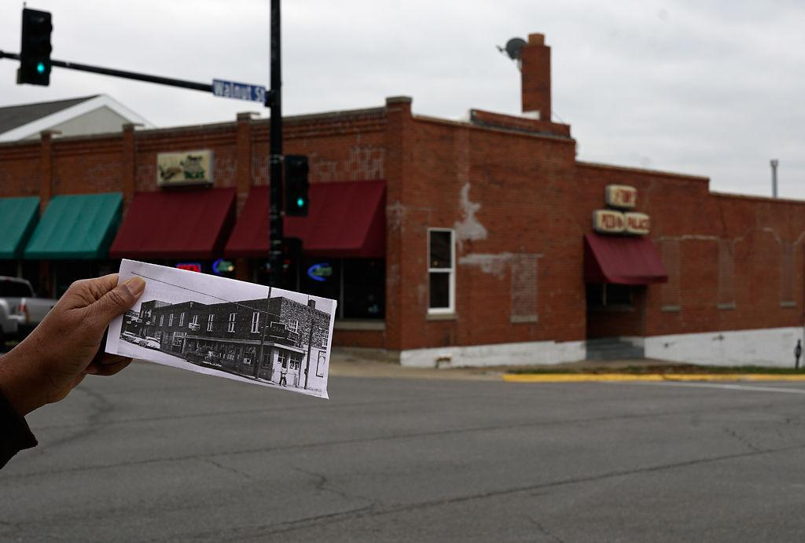

Today, the name Sharp End in Columbia means a few things. There is now a Sharp End Heritage Committee that continues to celebrate black heritage in Columbia and will continue to celebrate it in the future to come. In Columbia, there is also a Sharp End Entrepreneurial Development Fund that focusses on supporting minority and women owned businesses in Columbia and the surrounding areas. It focusses on increasing the economic development in low-income area. Last year, the fund granted 10 winners a range of $1,400 to $3,150. The last standing building that remains of the once Sharp End District is still a thriving business today and has secured a foundation that will last them in the future. Tony's Pizza has sat in the current building for 30 years, first opened by Ed 'Dick' Tibbs. Tibbs son continues to own and operate the business and will continue to operate the business into the future.
Caption: Ed Tibbs holds up a photo of a building on the corner of 5th and Walnut while standing in front of his own building, which sits across the street, on Thursday in Columbia. Tibbs' building has been home to Tony’s Pizza Palace for the last 30 years. Credit: Pamela Houser
While the Sharp End District may no longer exist, the name Sharp End will remain a means to support the black communities that remain in Columbia. It continues to help black owned businesses prosper in this community and provide these businesses to the black community as a safe haven in a city that continues to face racial divides. Sharp End continues to be a sign of black excellence and independence in Columbia and will continue to mean that in the far future.